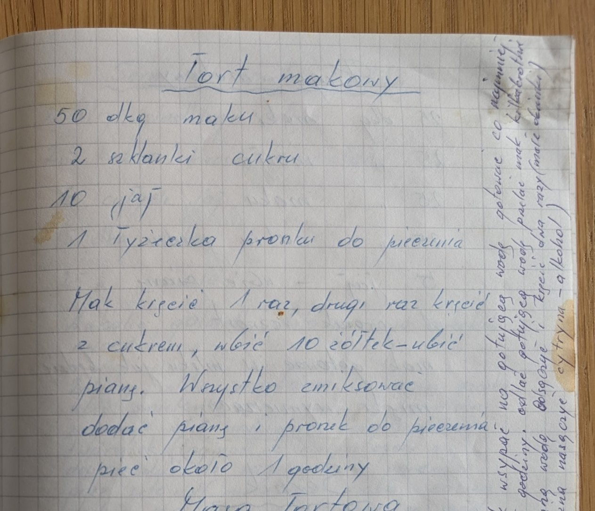
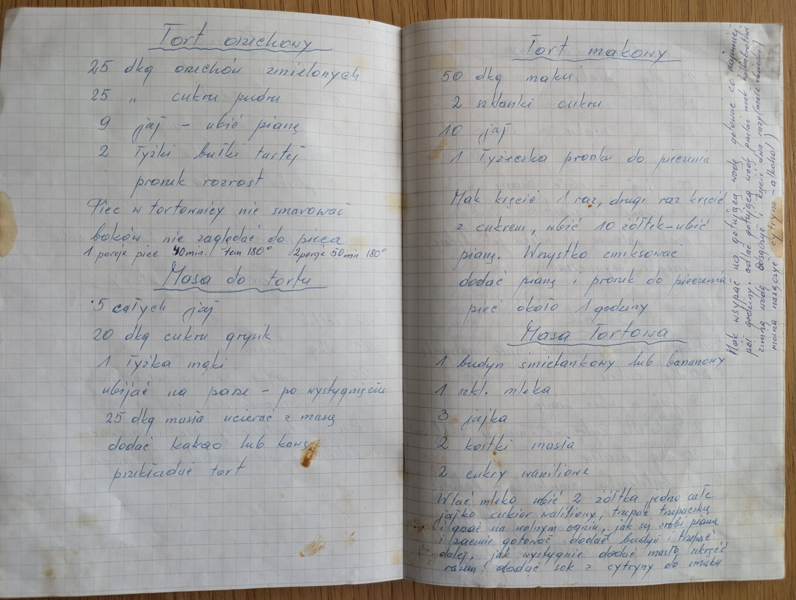
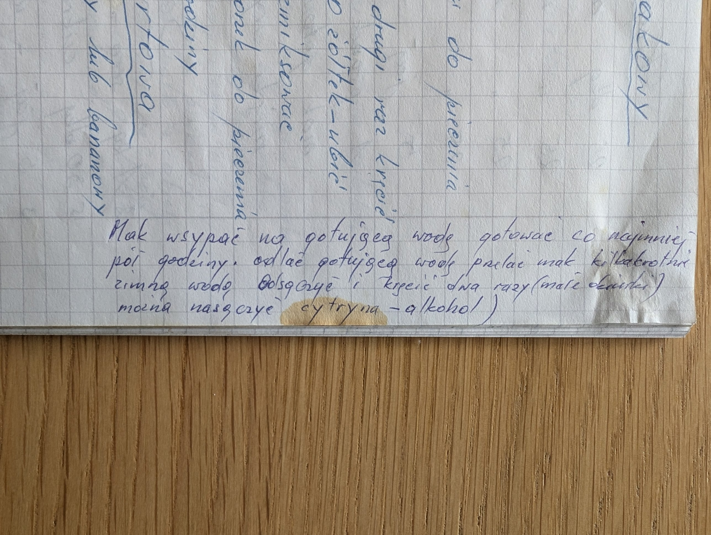

Tort makowy



Składniki
- 50 dkg maku
- 2 szklanki cukru
- 10 jaj
- 1 łyżeczka proszku do pieczenia
Przygotowanie
- Mak wsypać na gotującą wodę, gotować co najmniej pół godziny.
- Odlać gotującą wodę, przelać mak kilkakrotnie zimną wodą, odsączyć.
- Mak kręcić 1 raz, drugi raz kręcić z cukrem (małe oczka).
- Ubić 10 żółtek, ubić pianę.
- Wszystko zmiksować, dodać pianę i proszek do pieczenia.
- Piec około 1 godziny.
Oryginalny zapis
Tort makowy 50 dkg maku 2 szklanki cukru 10 jaj 1 łyżeczka proszku do pieczenia Mak kręcić 1 raz, drugi raz kręcić z cukrem, ubić 10 żółtek – ubić pianę. Wszystko zmiksować dodać pianę i proszek do pieczenia. piec około 1 godziny [dopisek na marginesie] Mak wsypać na gotującą wodę gotować co najmniej pół godziny. odlać gotującą wodę przelać mak kilkakrotnie zimną wodą. Odsączyć i kręcić dwa razy (małe oczka) (można nasączyć cytryna – alkohol)